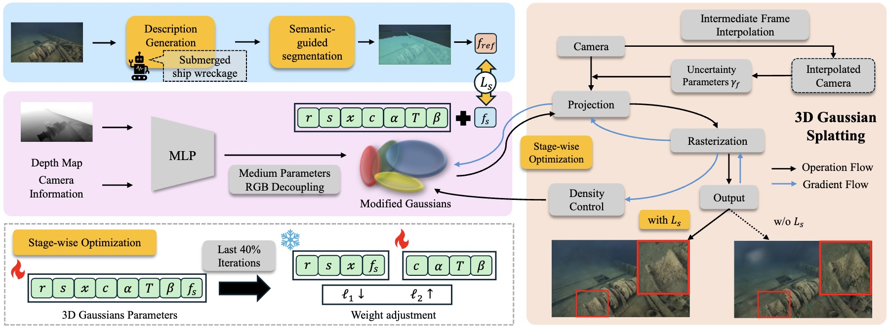

MyUnderwaterWorld: Intelligent Underwater Scene Representation
Underwater Scene Enhancement and 3D Modelling


(Left) Raw video by Piyapong Suwannakul and (Right) Processed video using VI-Lab tools. See video HERE
Aim
Our oceans have been explored for hundreds of years and these activities are becoming increasingly important because of the need to manage and conserve mineral and biological resources effectively, as well as to better understand planetary-scale processes including tectonics and marine hazards. Exploration and analysis are however always limited by the number of diving experts, technologies, and in particular, costs. Advanced imaging methods now support a new paradigm of remote discovery where onshore experts with specific knowledge, such as geologists, archaeologists and biologists, are able to remotely model and explore underwater scenes.
Underwater environment represents the combination of several challenges. Water is a dynamic medium and suspended particles move. Light scatter causes blur and halo effects, whilst light absorption leads to colour distortion and reduced contrast. The model of underwater imagery should thus comprise temporally- and spatially-variant distortion, uneven intensity bias, multiplicative noise, and additive noise. This project aims to exploit underwater image priors to perform 3D mapping process can be done directly from the raw underwater sequences.
Methods
- RUSplatting: Robust 3D Gaussian Splatting for Sparse-View Underwater Scene Reconstruction (BMVC2025)
[Project] [PDF]
[ Code] [Dataset]
Our enhanced Gaussian Splatting framework improves both visual quality and geometric accuracy in underwater rendering. We employ physics-guided decoupled RGB learning for accurate colour restoration, a frame interpolation strategy with adaptive weighting to address sparse views, and a new loss function that reduces noise while preserving edges, crucial for deep-sea content.
- SWAGSplatting: Semantic-guided Water-scene Augmented Gaussian Splatting
[ PDF] 
We present a semantic-guided 3D Gaussian Splatting framework for deep-sea scene reconstruction, where each Gaussian embeds CLIP-derived features to enforce semantic and structural consistency. A dedicated semantic loss and stage-wise training strategy further enhance stability and reconstruction fidelity.
- UW-GS: Distractor-Aware 3D Gaussian Splatting for Enhanced Underwater Scene Reconstruction (WACV2025)
[Project] [PDF
] [ Code] [Dataset]Our Gaussian Splatting-based method introduces a color appearance model for distance-dependent color variation, employs a new physics-based density control strategy to enhance clarity for distant objects, and uses a binary motion mask to handle dynamic content. The method is optimised with a well-designed loss function supporting scattering media and strengthened by pseudo-depth maps.
- Marine Snow Removal Using Internally Generated Pseudo Ground Truth (EUSIPCO2025)
[ PDF] The framework introduces a novel method for generating paired datasets from raw underwater videos, producing snowy and snow-free pairs that enable supervised training for video enhancement.
Research team
Core
- N. Anantrasirichai: Lead academic
- Guoxi Huang (Edward): Postdoctoral researcher,
[ Paper1] [ Paper2] [Paper3] - Alexandra Malyugina: Postdoctoral researcher, [Paper]
- Haoran Wang: PhD student (Co-supervisor: Aaron Zhang),
[ Paper] [UW-GS Project Page] - Yini Li: PhD student (Co-supervisor: Prof David Bull),
[ Paper]
Undergrad/Postgrad projects
- [Best AI Project Prize] Zhuodong Jiang (2024/2025), Underwater 3D Gaussian Splatting With Frame Interpolation, Colour Channel Decoupling and Adaptive Bilateral Filtering [Thesis] [Paper] [Submerged3D Dataset]
- Luca Gough (2023/2024), 3D Representation of Underwater Scenes using Neural Radiance Fields [Thesis] [Paper
] - George Atkinson (2023/2024), Generative Deep Learning for Temporally Consistent Underwater Video Enhancement [Thesis]
Downloads
Publications
- RUSplatting: Robust 3D Gaussian Splatting for Sparse-View Underwater Scene Reconstruction. Z Jiang, H Wang, G Huang, B Seymour and N Anantrasirichai, 36th British Machine Vision Conference. 2025
[ PDF] [ CODE] [Dataset] - UW-GS: Distractor-Aware 3D Gaussian Splatting for Enhanced Underwater Scene Reconstruction. H Wang, N Anantrasirichai, F Zhang, and D Bull, IEEE/CVF Winter Conference on Applications of Computer Vision. 2025
[ PDF] [ CODE] [UW-GS Project Page] [Dataset] - AquaNeRF: Neural Radiance Fields in Underwater Media with Distractor Removal. L Gough, A Azzarelli, F Zhang, and N Anantrasirichai, IEEE International Symposium on Circuits and Systems. 2025
[ PDF] - Marine Snow Removal Using Internally Generated Pseudo Ground Truth. A Malyugina, G Huang, E Ruiz, B Leslie, N Anantrasirichai. 33rd European Signal Processing Conference, 2025
[ PDF] - [Shortlist Best Student Paper Award] Zero-TIG: Temporal Consistency-Aware Zero-Shot Illumination-Guided Low-light Video Enhancement. Y Li and N Anantrasirichai. 33rd European Signal Processing Conference, 2025
[ PDF] - BVI-Mamba: video enhancement using a visual state-space model for low-light and underwater environments. G Huang, R Lin, Y Li, D Bull, N Anantrasirichai. Machine Learning from Challenging Data, 2025
[ PDF] [CODE]
White papers
- Visual enhancement and 3D representation for underwater scenes: a review, G Huang, H Wang, B Seymour, E Kovacs, J Ellerbrock, D Blackham, N Anantrasirichai, 2025 [PDF]
- Bayesian neural networks for one-to-many mapping in image enhancement, G Huang, N Anantrasirichai, F Ye, Z Qi, R Lin, Q Yang, D Bull, 2025 [PDF] [CODE]
Datasets
Related research
Related publications from VI-Lab
- A unified framework for contextual lighting, colorization and denoising for UHD sequences . N Anantrasirichai and D R Bull. IEEE ICIP, 2021
- Artificial intelligence in the creative industries: A review. N Anantrasirichai and D R Bull, Artif Intell Rev 55, 2022
- ST-MFNet Mini: Knowledge distillation-driven frame interpolation. C Morris, D Danier, F Zhang, N Anantrasirichai, D R Bull. IEEE International Conference on Image Processing. 2023